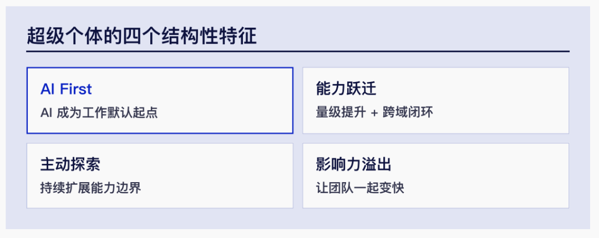
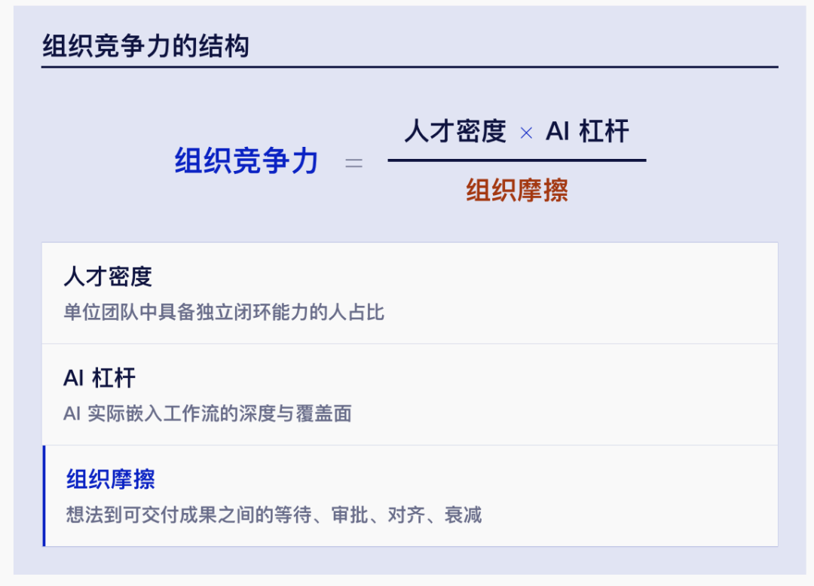
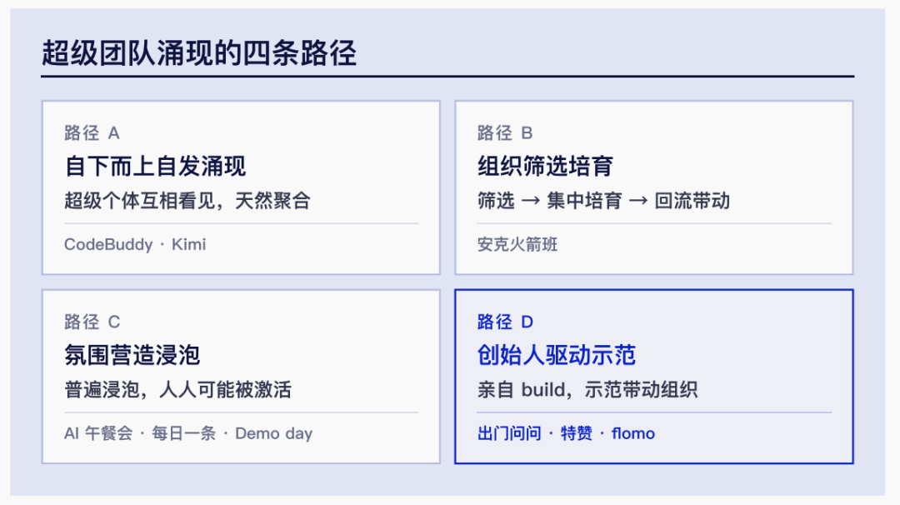

AI × SEMICONDUCTOR / 001
从超级个体
到超级团队
不等于组织变强。
真正的变化发生在个人经验被转化为工作流，工作流被转化为团队系统，项目成果被转化为企业资产。
AI 首先放大个人，但只有当个人经验被转化为可复用、可评测、可追溯的工作流，并由领域专家、AI 工程师、平台工程师和一线用户共同对业务结果负责时，个人能力才会真正转化为组织能力。
一、从 Coding 行业说起
1. AI 为什么首先造就“超级个体”
Coding 行业最先让人感受到 AI 带来的组织变化。借助代码生成、测试、检索和 Agent，一个工程师可以完成过去需要多人协作的一段工作链路。所谓“超级个体”，可以概括为：
借助 AI，一个人的产出规模和能力半径接近过去一个小团队。

这三张图来自对 Coding 场景中超级个体、超级团队的研究和归纳，描述的是软件开发行业的观察框架，并不是针对半导体行业得出的研究结论。
2. Coding 场景中的超级团队框架

该框架把组织竞争力理解为人才密度与 AI 杠杆共同作用、再受到组织摩擦制约。其中，“独立闭环能力”“AI 嵌入工作流”和快速交付，在 Coding 场景中相对容易观察和度量。

图中归纳的自下而上涌现、组织筛选培育、氛围营造浸泡和创始人驱动示范，也主要来自 Coding 团队的实践观察。它们可以作为半导体组织的启发，但不能直接套用，原因在于半导体研发的工具链、专业分工、验证成本和责任边界明显不同。
本文引用这两张超级团队相关图片，是为了说明概念在 Coding 行业中的来源和表达方式，不把它们作为半导体行业已经形成超级团队的证据。后文讨论的是哪些机制能够迁移，以及迁移以后需要增加哪些条件。
3. 跨行业研究提供的旁证
2026 年发表于 Organization Science 的随机现场实验覆盖宝洁 791 名专业人员。研究发现，在产品创新任务中，使用生成式 AI 的个人，其表现可以达到未使用 AI 的人类双人团队水平；AI 还在一定程度上缩小了研发人员与商业人员之间的专业视角差异。但研究同时发现，人类判断在创意筛选和最终选择环节仍然有价值。Dell'Acqua et al., 2026 ↗
这项研究不是半导体研究，不能直接证明芯片工程师会得到相同幅度的提升，但它至少说明两件事：第一，AI 可以补充个人原本缺少的部分专业视角；第二，AI 更擅长扩大方案生成能力，而最终评价、取舍和责任仍然需要人承担。
二、半导体行业不能简单复制 Coding 模式
- 流程长且高度耦合。从规格、设计、验证、实现、Sign-off、DFT 到测试和良率，局部优化不一定带来全局最优。
- 专业知识隐性且分散。大量知识存在于工程师经验、脚本、历史项目、EDA 参数和异常处置记录中。
- 工具链复杂。AI 不仅要生成内容，还要理解设计状态、调用 EDA 或测试工具、解析结果并继续迭代。
- 结果需要严格签核。错误建议可能影响验证结论、Sign-off、流片、测试覆盖率和产品质量。
- 数据高度敏感。设计数据、工艺数据、测试数据和客户信息不能无边界地进入通用模型。
- 反馈周期不均匀。有些任务可以分钟级评测，有些结果要到流片甚至量产以后才能确认。
这意味着，半导体行业的超级个体不能只是“Prompt 写得好、代码生成得快”。他必须同时具备领域判断、工具使用、结果验证和工程资产沉淀能力。
三、半导体行业的“超级个体”是什么
半导体领域的超级个体，不只是会使用 ChatGPT 的人，而是能够完成下面的闭环：
- 理解设计、验证、实现或测试问题；
- 把个人经验转化为结构化工作流；
- 使用 AI、脚本和 EDA 工具执行工作流；
- 通过仿真、规则、Golden Case 或真实数据判断结果是否可信；
- 把方法沉淀为其他工程师也能使用的资产。
例如，一名超级验证工程师不只是让 AI 生成 Test Case，而是能够设计下面的工作流：
过去，工程师主要亲自执行每一步；未来，他更多是在定义目标和约束、设计工作流、判断结果以及处理例外。
- 专业纵深：能够识别 AI 不知道什么，判断结果能否用于工程决策；
- AI 杠杆：能够使用模型和 Agent 扩大分析、生成与探索能力；
- 工具闭环：能够让 AI 调用真实工具，而不是停留在对话和文本生成；
- 资产意识：能够把个人经验转化为数据、知识、评测和可复用工作流。
四、为什么超级个体还不等于组织能力
如果一个人的 AI 能力只存在于个人电脑、个人 Prompt 和个人脚本里，他只是一个高效个体。组织会面临四个风险：
- 能力无法复用，换一个人就需要重新开始；
- 结果缺乏统一评测，难以判断真实价值；
- 脚本和 Agent 缺少版本、权限和运行维护；
- 关键知识进一步集中在少数人手中，形成新的单点依赖。
因此，每个有效的 AI 实践至少要沉淀：适用与不适用场景、标准输入输出、Prompt 或 Agent 工作流、工具调用方式、数据与知识来源、Benchmark、评测集、人工复核规则、已知风险，以及版本和负责人。
一个 AI 工作流如果只有开发者本人能使用，不算完成；只有其他工程师也能稳定使用、结果能够被评测和追溯，才算形成组织能力。
五、从 Coding 框架到半导体实践
1. 重新解释人才密度、AI 杠杆与组织摩擦
| Coding 框架中的概念 | 半导体行业中的对应含义 |
|---|---|
| 人才密度 | 不是同类高手的集中度，而是设计、验证、EDA、测试、数据等互补专业能力是否齐全。 |
| 独立闭环 | 不是一个人完成全部芯片流程，而是一个小队能否完成“问题—工具执行—结果验证—专业签核”闭环。 |
| AI 杠杆 | 不只是代码和文档生成，而是 AI 接入规格、知识、EDA/测试工具和真实工程反馈的深度。 |
| 组织摩擦 | 除等待、审批和对齐外，还包括数据权限、License、算力、工具接口、跨流程交接和签核成本。 |
| 快速交付 | 不是单纯提高功能发布频率，而是更快获得可信的工程反馈并缩短设计或测试收敛周期。 |
2. 转换 Coding 团队的四种涌现路径
- 自下而上涌现可以发现超级个体，但在半导体中很难自然补齐完整专业链路；
- 组织筛选培育可以培养骨干，但不能只筛选 AI 使用能力，还要考察领域判断和工程签核能力；
- 氛围浸泡可以激活更多人，但 AI 午餐会、每日分享和 Demo Day 本身不会自动产生生产价值；
- 负责人示范可以形成牵引，但最终必须转化为平台、评测和多人可复用的工作流，不能长期依赖个人英雄主义。
因此，半导体行业更适合增加一条“场景牵引、联合攻关、平台沉淀”的路径：选择一个高价值且可评测的工程问题，组建设计、验证、测试专家与 AI、平台人员的跨职能小队，完成真实流程验证，再将共性能力沉淀到平台。
这是本文基于半导体研发特点提出的管理推论，而不是上述 Coding 研究的原始结论。
3. 围绕工程结果组织人和 Agent
明确的工程目标 + 唯一 DRI + 互补专业角色 + AI 工作流 + 共性平台 + 评测与签核闭环。
团队目标不应写成“建设验证 Agent”，而应写成：将 Coverage Closure 周期缩短 30%；将 Regression 失败分析时间降低 50%；在不降低缺陷发现能力的前提下减少无效测试；让某类问题的根因定位从数天降低到数小时。
| 角色 | 主要责任 |
|---|---|
| 业务 DRI | 对最终业务结果负责，决定范围与优先级。 |
| 领域专家 | 定义专业问题、约束和验收标准。 |
| AI 工程师 | 负责模型、Agent 和算法实现。 |
| 平台工程师 | 负责 EDA/测试工具接入、工程化和运行。 |
| 数据/知识负责人 | 负责数据质量、知识、权限和可追溯。 |
| 一线用户 | 持续使用、反馈并完成业务验收。 |
| 专业签核人 | 判断结果能否进入正式研发或生产流程。 |
同一个人可以承担多个角色，但这些责任不能缺失。
六、从“人类团队”到“人机超级团队”的三次转化
1. 从任务自动化到工作流重构
低水平的 AI 应用是让 AI 帮人写报告、写脚本、总结日志。更高水平的做法是重新设计整个工作流：
不是把 AI“加到”原有流程中，而是重新分配人与机器的职责。
2. 从个人经验到公共资产
资深工程师最有价值的不只是完成某次任务，而是定义什么信号意味着问题、应该调用什么工具、如何调整参数、什么结果可以接受，以及什么情况必须停止并升级。
这些内容一旦被结构化，就可以变成 Agent 的规则、工具、知识和评测集。专家因此从“亲自解决所有问题”，转向“设计解决问题的系统”。
3. 从局部效率到端到端结果
AI 可能让某一步变快，却让下游承担更多返工。例如 RTL 生成更快，但验证缺陷增加；测试项减少，但诊断信息受到损失。超级团队必须对端到端结果负责，而不是只优化单个环节。
- 研发周期是否缩短；
- PPA、覆盖率、良率或测试成本是否改善；
- 缺陷是否更早发现；
- 返工和错误逃逸是否增加；
- 能力是否能够跨项目复用。
七、超级团队需要什么管理机制
1. 一个结果只能有一个 DRI
所有人可以共同参与，但必须有一个人对最终结果负责。DRI 在目标、预算、资源和风险边界内自主决策；突破边界才升级。
2. 限制同时推进的项目数量
AI 方向容易产生大量想法和 Demo。团队应限制在制项目，让新项目进入时明确替代哪个旧项目。没有真实用户、业务指标、DRI 和评测方法的事项不应进入正式项目组合。
3. 平台与业务联合交付
4. 用真实业务结果评测 AI
AI 评测不能只看离线准确率。Harvard Business School AI Institute 强调，企业应尽量在真实使用环境中，通过结果数据评价 AI，而不是只比较孤立输出或用户喜好。HBS AI Institute, 2026 ↗
- 模型层：正确率、召回率、幻觉率和稳定性；
- 任务层：单个任务的时间、成本和质量；
- 流程层：端到端周期、返工和异常处理；
- 业务层：PPA、覆盖率、测试成本、良率和上市时间。
八、需要保持的克制
“超级团队”不应成为新的管理口号。当前证据仍然存在明显局限：
- 通用知识工作实验不能直接外推到芯片设计；
- EDA 厂商数据多来自成功客户案例，存在选择性披露；
- 单个 Block、单个流程的结果不能代表 Full Chip 或完整产品周期；
- 离线 Benchmark 不能替代实际项目验证；
- AI 提高平均产出质量的同时，也可能导致方案趋同；一项人机协作现场实验预印本观察到人机团队产出更高但也更同质，这一结果仍需同行评审和跨行业复现。Ju & Aral, 2026 ↗
- 模型能力升级很快，但企业流程、知识和数据治理的改变更慢。
所以，正确的目标不是宣布“我们已经成为超级团队”，而是持续回答：
- 哪些工作应该由 AI 固化？
- 哪些判断必须由人承担？
- 哪些个人经验值得转化成组织资产？
- 哪些局部效率提升真正转化成了端到端业务价值？
- 如果核心专家离开，工作流还能否稳定运行？
结语
AI 首先放大个人能力，但个人能力不会自动变成组织能力。在半导体行业，真正稀缺的不是会使用 AI 的人，而是能够把领域知识、EDA 和测试工具、数据、评测、责任与反馈连接起来的人。
把专家经验转化为 AI 工作流；
把个人工作流转化为团队协作系统；
把项目成果转化为企业可复用的能力资产。
这条路不会像 Coding 一样迅速，因为半导体行业的验证成本更高、流程更长、责任更重。但也正因为如此，一旦企业真正建立起人机协同的工程闭环，形成的壁垒会比单一模型或单点工具更深。